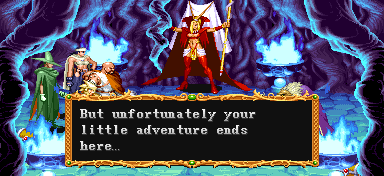
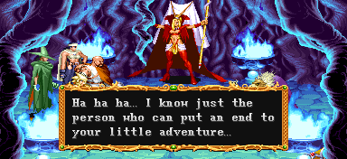
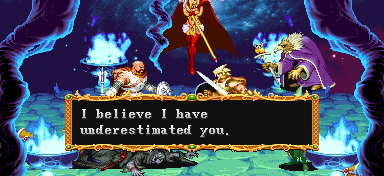
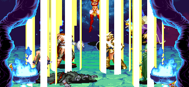
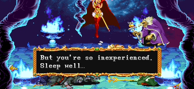
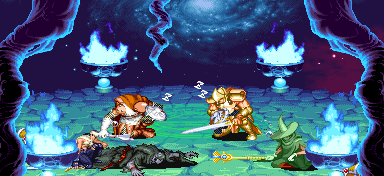

| STAGE 6 Battle of Strong Oak |
| 떡갈나무 요새에서의 전투 |
| (일어판 - 功防!! 大樹の大要塞 : 공방!! 거대나무의 대요새) |
스토리 상의 전환점을 맞이하게 되는 스테이지다.
일방통행 이므로 단순하지만 제법 길다.
클래스에 따라 가장 많은 수의 라이트닝 볼트를 얻을 수 있는 곳 이기도 하다.
일방통행 이므로 단순하지만 제법 길다.
클래스에 따라 가장 많은 수의 라이트닝 볼트를 얻을 수 있는 곳 이기도 하다.
인트로 - 입구 |
아엔모어 숲의 중심부에 솟아있는 1000년 된 거대한 나무.
(일어판)
アエンクモアの森の中心にそびえ立つ、樹齡1000年の大樹。
아엔모어 숲의 중심부에 우뚝 솟아있는 1000년 된 거대한 나무.
"하하하하! 마왕이 부활하기까지 얼마 남지 않았다!!"
(일어판)
"ファハハハハ もうすぐ魔人が復活する。"
"푸하하하하. 이제 곧 마인이 부활한다."
"미스타라 전체는 내 손아귀 안에 떨어질 것이다!!!"
(일어판)
"その時こそ、すべての世界が我がものとなろう。"
"그 때야말로, 전세계가 내것이 되겠지."
그 거대 나무를 본 사람은 누구 한 명도 돌아오지 않았다.
(일어판)
"その大樹を見たものは、誰1人として歸ってこない。"
"그 거대 나무를 본 사람은 누구 한 명도 돌아오지 않았다."
|
"(입구가) 이 근처 어딘가에 있어."
(일어판)
"このあたりのはずなんだが...。"
"이 근처 어디일텐데......"
느닷없이 맨티코어가 뛰쳐나온다.
오른쪽 구석에 상자가 하나 놓여있다. 굳이 열 필요는 없다.
상자 A
| 랜덤 아이템 | 고정 아이템 | 클래스별 아이템 | |||||||
|
|||||||||
| 드워프가 격파시 | |||||||||
간단한 공략 - 자세한 공략은 보스 공략을 보도록 한다. ▶ 보스 공략 보기
패턴이 단순하고 같이 나오는 일반 몬스터도 없기 때문에 난이도가 낮은 보스라 할 수 있다.
다만 앞쪽에서 공격하면 가드한 후 덥치는 공격을 감행하니 절대로 그림자 치기 위치를 유지해야 한다. 단검이나 망치를 가져와서 가드를 푸는데 사용하는 것도 좋다. 하나 던지고 콤보 넣고 쓰러졌다가 일어나면 하나 던지고 콤보 넣고를 반복하면 무난하다.
아니면 맨티코어의 모든 공격은 가드가 되니 가드 후 빈틈을 노려서 공격을 넣는 것도 괜찮다.
다만 맨티코어의 꼬리에 데미지 판정이 있다. 절대로 무턱대고 뒤에서 공격하지 않도록 한다.
패턴이 단순하고 같이 나오는 일반 몬스터도 없기 때문에 난이도가 낮은 보스라 할 수 있다.
다만 앞쪽에서 공격하면 가드한 후 덥치는 공격을 감행하니 절대로 그림자 치기 위치를 유지해야 한다. 단검이나 망치를 가져와서 가드를 푸는데 사용하는 것도 좋다. 하나 던지고 콤보 넣고 쓰러졌다가 일어나면 하나 던지고 콤보 넣고를 반복하면 무난하다.
아니면 맨티코어의 모든 공격은 가드가 되니 가드 후 빈틈을 노려서 공격을 넣는 것도 괜찮다.
다만 맨티코어의 꼬리에 데미지 판정이 있다. 절대로 무턱대고 뒤에서 공격하지 않도록 한다.
▶ 클리어 후 레벨이 올라가는 클래스 : 클레릭, 시프
맨티코어를 물리치면 배경의 바위가 열리고 그곳으로 들어간다.
1층 |
들어가면 상자 두개가 놓여 있다. 구멍난 곳에서는 불길이 랜덤하게 치솟는다.
불 내성의 반지가 있다면 상관없지만, 반지가 없다면 맨위로 붙어서 이동하도록 한다.
상자 1-1 - 낙석/불/화살 트랩 중 하나가 발동한다.
| 랜덤 아이템 | 고정 아이템 | 클래스별 아이템 | |||||||
|
|||||||||
| 드워프가 격파시 | |||||||||
상자 1-2
| 랜덤 아이템 | 고정 아이템 | 클래스별 아이템 | |||||||
|
|||||||||
| 드워프가 격파시 | |||||||||
이 구역에서는 스켈레톤이 나온다. 스테이지 진행과는 상관이 없다.
다만 꽤나 방해되니 먼저 제거하는 것도 나쁘지 않다.
등장하는 적 - 약 34초가 지나면 도망간다.
| 1인 | 바닥에서 붉은색 스켈레톤 x2 + 녹색 스켈레톤 x1 → 한마리만 남으면 바닥에서 붉은색 스켈레톤 x1 + 녹색 스켈레톤 x2 |
| 2인 | 1인 플레이와 똑같다. |
| 3인 | 바닥에서 붉은색 스켈레톤 x2 + 녹색 스켈레톤 x3 → 한마리만 남으면 바닥에서 붉은색 스켈레톤 x3 + 녹색 스켈레톤 x2 |
| 4인 | 3인 플레이와 똑같다. |
이곳까지 오면 더이상 스테이지 진행이 안되고 액스 놀이 나온다.
액스 놀을 전부 물리치고 코볼드들이 사라져야 진행 할 수 있다.
싸울 때는 맨위에 붙어서 싸우거나 아니면 양쪽 구석으로 몰아넣고 싸우는게 좋다.
등장하는 적 - 약 47초가 지나면 도망간다.
| 1인 | 왼쪽에서 액스 놀 x1 + 오른쪽에서 액스 놀 x1 → 한마리만 남으면 오른쪽에서 오일던지는 코볼드 x4 → 왼쪽에서 액스 놀 x1 + 오른쪽에서 액스 놀 x1 → 한마리만 남으면 왼쪽에서 오일던지는 코볼드 x4 → 액스 놀을 전부 제거하면 왼쪽에서 액스 놀 x1 + 오른쪽에서 액스 놀 x1 → 한마리만 남으면 오른쪽에서 오일던지는 코볼드 x4 + 왼쪽에서 오일던지는 코볼드 x4 |
| 2인 | 1인 플레이와 똑같다. |
| 3인 | 배경에서 코볼드 x1 + 아래쪽에서 코볼드 x1 + 왼쪽에서 액스 놀 x1 + 오른쪽에서 액스 놀 x1 → 한마리만 남으면 오른쪽에서 오일던지는 코볼드 x4 → 배경에서 코볼드 x1 + 아래쪽에서 코볼드 x1 + 왼쪽에서 액스 놀 x1 + 오른쪽에서 액스 놀 x1 → 한마리만 남으면 왼쪽에서 오일던지는 코볼드 x4 → 전부 제거되면 배경에서 코볼드 x1 + 아래쪽에서 코볼드 x1 + 왼쪽에서 액스 놀 x1 + 오른쪽에서 액스 놀 x1 → 한마리만 남으면 오른쪽에서 오일던지는 코볼드 x4 + 왼쪽에서 오일던지는 코볼드 x4 |
| 4인 | 3인 플레이와 똑같다. |
조금 전진하다 보면 또 다시 스켈레톤이 나온다.
스테이지 진행과는 상관이 없으니 그냥 무시해도 된다.
등장하는 적 - 약 24초가 지나면 도망간다.
| 1인 | 바닥에서 붉은색 스켈레톤 x1 + 녹색 스켈레톤 x2 → 한마리만 남으면 바닥에서 붉은색 스켈레톤 x2 + 녹색 스켈레톤 x1 |
| 2인 | 1인 플레이와 똑같다. |
| 3인 | 바닥에서 붉은색 스켈레톤 x3 + 녹색 스켈레톤 x2 → 한마리만 남으면 바닥에서 붉은색 스켈레톤 x2 + 녹색 스켈레톤 x3 |
| 4인 | 3인 플레이와 똑같다. |
2층 |

불트랩이 지그재그로 놓여있고 사이 사이에 헬 하운드와 상자가 있다.
입구와 출구에 넓은 공간이 있으니 헬 하운드를 잡으려면 그쪽으로 유인하는게 좋다. 3인 이상이라면 한마리만 남으면 공중에서 한마리, 왼쪽이나 오른쪽에서 한마리가 더 나온다.
파이터, 시프, 드워프는 이곳 상자를 열면 라이트닝 볼트 반지가 나오니 꼭 얻도록 하자.
불사이를 (해골표시가 있는 곳) 지나가면 화살이 날아온다. 불 내성의 반지가 있다 해도 무턱대고 지나가지 말고 맨 위나 맨 아래에 붙어서 가는게 좋다.
상자 2-1 - 잠겨있다.
| 랜덤 아이템 | 고정 아이템 | 클래스별 아이템 | |||||||
|
|||||||||
| 드워프가 격파시 | |||||||||
상자 2-2 - 낙석/불/석화 트랩 중 하나가 발동한다.
| 랜덤 아이템 | 고정 아이템 | 클래스별 아이템 | |||||||
|
|||||||||
| 드워프가 격파시 | |||||||||
3층 |
조금 전진하면 셰도우 엘프가 나온다. 스테이지 진행과 무관하다.
* 팻말에 적혀 있는 내용 *
Gargoules are immune to non-magic attacks.
가고일은 비(非) 마법 공격에 대해 면역성을 가지고 있다.
- 굳이 설명 할 필요도 없지만 공격 주문, 혹은 마법 도구/무기로만 무찌를 수 있다.
등장하는 적 - 약 42초가 지나면 도망간다.
| 1인 | 왼쪽에서 셰도우 엘프 x2 → 전부 물리치면 오른쪽에서 셰도우 엘프 x2 (이 패턴을 3회 반복) |
| 2인 | 1인 플레이와 똑같다. |
| 3인 | 1인 플레이와 똑같다. |
| 4인 | 1인 플레이와 똑같다. |

중앙에 가고일 두마리가 있다. 좋은 아이템을 줄 가능성이 많으니 잡고 가는 것도 괜찮다.
4층 |
상자가 하나 놓여있고 코볼드 두마리가 공중에서 뛰쳐 나왔다가 금방 도망간다.
이곳의 배경을 보면 이번 4층이 올라가고 있다는 것을 알 수 있다.
상자 1-1
| 랜덤 아이템 | 고정 아이템 | 클래스별 아이템 | |||||||
|
|||||||||
| 드워프가 격파시 | |||||||||
지나갈 때마다 위 아래로 불꽃이 하나씩 생기며 중간 쯤 오면 구울 네마리가 등장한다.
출구 부분까지 오면 셰도우 엘프 두명이 왼쪽에서 나타난다.
이곳의 상자는 전부 잠겨있다. 4-2와 4-3 상자에서는 열쇠가 나오고 4-4는 열쇠가 안나온다.
따라서 시프가 없거나 열쇠가 1개 뿐 이라면 4-4는 가장 마지막에 여는게 좋다.
The touch of a Lich will paralize you, leaving you helpless.
리치의 접촉은 당신을 마비시키고, 무기력하게 만든다.
(오브도 소용이 없다.)
상자 4-2 - 잠겨있다.
| 랜덤 아이템 | 고정 아이템 | 클래스별 아이템 | |||||||
|
|||||||||
| 드워프가 격파시 | |||||||||
상자 4-3 - 잠겨있다.
| 랜덤 아이템 | 고정 아이템 | 클래스별 아이템 | |||||||
|
|||||||||
| 드워프가 격파시 | |||||||||
상자 4-4 - 잠겨있다.
| 랜덤 아이템 | 고정 아이템 | 클래스별 아이템 | |||||||
|
|||||||||
| 드워프가 격파시 | |||||||||
|
"여기까지 당도하다니 놀랍구나."
(일어판)
"ほう、ここまでよくたどりつけましたね。"
"호오, 잘도 여기까지 도달했어."

"허나 안됐지만 네놈들의 보잘 것 없는 모험도 여기서 끝이다......"
(일어판)
"やっと,たどりついたのにここで冒險も終わりだなんてね...。"
"겨우, 간신히 여기에 도착했는데도 여기서 모험도 끝이겠군..."

"후후후......그 보잘 것 없는 모험을 끝내 줄 만한 인물을 알고 있지......"
(일어판)
"おほほほ...。冒險のフィナ―レを篩るのにふさわしい人に今わせてあげるわ...。"
"오호호호... 모험의 피날레를 장식하기에 걸맞는 상대를 지금 만나게 해 주지..."
그리고 나서 리치가 소환된다. (제발로 들어 온 것 인지도 모르겠지만)
왼쪽에 상자가 하나 있고 3인 이상 플레이시 오른쪽에도 상자가 하나 있다.
상자 5-1
| 랜덤 아이템 | 고정 아이템 | 클래스별 아이템 | |||||||
|
|||||||||
| 드워프가 격파시 | |||||||||
상자 5-2
| 랜덤 아이템 | 고정 아이템 | 클래스별 아이템 | |||||||
|
|||||||||
| 드워프가 격파시 | |||||||||
| ??? |
간단한 공략 - 자세한 공략은 보스 공략을 보도록 한다. ▶ 보스 공략 보기
제법 까다로운 보스다. 닿기만 해도 마비가 되고 공격도 무섭다. 파이어 볼이나 파이어 월은 빠르기 까지 하며 맞아도 쓰러지지 않으면서 잘 튕겨나간다.
왼쪽 구석에서 공격해도 리치에게 닿지 않을 정도 공간을 확보한 후 그쪽으로 유인해서 공격하는게 좋다. 알아서 구석으로 들어오면 좋고 뒤쪽으로 온다면 파이터, 드워프, 엘프는 A+B로 끌어들이고 클레릭, 시프는 뒤로 돌아가서 강공격으로 몰아넣도록 한다. 매직 유저는 프로젝티드 이미지를 시전하고 뒤로 돌아가서 공격하도록 한다.
* 특히 시프의 경우 공격할 때 몸을 앞으로 쭉 내뻗으니 좀 더 공간을 벌려야 한다.
공격할 때 불규칙하게 뒤로 튕기기 때문에 타이밍도 중요하다. 타이밍이 어긋나면 플레이어의 공격은 빗나가고 리치의 공격은 명중 될 수 있다. 정 힘들면 앉아서 공격하는게 나을 수도 있다.
단, 엘프와 매직 유저는 앉아서 공격하는게 오히려 안좋다. 매직 유저는 정 힘들면 그냥 일반 A공격만 타이밍에 맞춰서 넣는게 낫다.
상자에서 나오는 스피드 포션이나 힘의 포션을 이용하는 것도 좋은 방법이다.
만약 리치가 텔레포트 해서 빠져나갔다면 당황하지말고 침착하게 기다렸다가 다가오면 A+B로 끌어들이거나 뒤로 돌아가서 몰아넣도록 한다.
리치의 HP바가 한줄에서 약간 더 줄어들면 어스 퀘이크 후 애니메이트 데드를 시전한다.
HP바를 잘 보고 있다가 바로 앉아야 피할 수 있다.
제법 까다로운 보스다. 닿기만 해도 마비가 되고 공격도 무섭다. 파이어 볼이나 파이어 월은 빠르기 까지 하며 맞아도 쓰러지지 않으면서 잘 튕겨나간다.
왼쪽 구석에서 공격해도 리치에게 닿지 않을 정도 공간을 확보한 후 그쪽으로 유인해서 공격하는게 좋다. 알아서 구석으로 들어오면 좋고 뒤쪽으로 온다면 파이터, 드워프, 엘프는 A+B로 끌어들이고 클레릭, 시프는 뒤로 돌아가서 강공격으로 몰아넣도록 한다. 매직 유저는 프로젝티드 이미지를 시전하고 뒤로 돌아가서 공격하도록 한다.
* 특히 시프의 경우 공격할 때 몸을 앞으로 쭉 내뻗으니 좀 더 공간을 벌려야 한다.
공격할 때 불규칙하게 뒤로 튕기기 때문에 타이밍도 중요하다. 타이밍이 어긋나면 플레이어의 공격은 빗나가고 리치의 공격은 명중 될 수 있다. 정 힘들면 앉아서 공격하는게 나을 수도 있다.
단, 엘프와 매직 유저는 앉아서 공격하는게 오히려 안좋다. 매직 유저는 정 힘들면 그냥 일반 A공격만 타이밍에 맞춰서 넣는게 낫다.
상자에서 나오는 스피드 포션이나 힘의 포션을 이용하는 것도 좋은 방법이다.
만약 리치가 텔레포트 해서 빠져나갔다면 당황하지말고 침착하게 기다렸다가 다가오면 A+B로 끌어들이거나 뒤로 돌아가서 몰아넣도록 한다.
리치의 HP바가 한줄에서 약간 더 줄어들면 어스 퀘이크 후 애니메이트 데드를 시전한다.
HP바를 잘 보고 있다가 바로 앉아야 피할 수 있다.
▶ 클리어 후 레벨이 올라가는 클래스 : 파이터, 매직 유저, 시프

"내가 네놈들을 너무 과소평가 한 것 같구나."
(일어판)
"少少、お前をみくびっていたようだ。"
"조금은, 네놈도 발전한 것 같구나."

슬립(sleep)을 시전해서 플레이어 전원을 잠들게 한다.

"하지만 아직 네놈들은 애송이야. 잘 자거라......"
(일어판)
"まだまだ未熟。...フフフ、かわいい顔をして眠りこけているわ...。"
"아직 미숙해. ...후후후, 귀여운 얼굴을 하고 잠들었구나..."

배경의 두 인물은 웃으며 사라지고 이 스테이지는 마무리 된다.
알아도 그만 몰라도 그만인 내용
- 내용 보기 -
리치를 물리치고 나면 지정된 자리로 강제로 이동된다.
이 자리와 멀리 있으면 그만큼 걸어가는 시간이 있으니
시간이 급하다면 미리 최대한 자리를 가깝게 잡는게 좋다.
Copyright ⓒ 2007-2008 Crassus & Legon. All rights reserved.